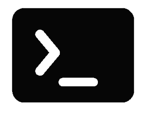

<mat-toolbar>
  
  <span class="spacer"></span>
    <a class= "neon link" (click)="navigateTo($event)" [routerLink]="''" fragment="hero">HOME</a>
    <a class= "neon link" (click)="navigateTo($event)" [routerLink]="''" fragment="experiencia">EXPERIENCIA</a>
    <a class= "neon link" (click)="navigateTo($event)" [routerLink]="''" fragment="skill">SKILLS</a>
    <a class= "neon link" (click)="navigateTo($event)" [routerLink]="''" fragment="proyectos">PROYECTOS</a>
  <button mat-icon-button class="icon favorite-icon" aria-label="GitHub" (click)="onNavigate(1)">
    <mat-icon></mat-icon>
  </button>
  <button mat-icon-button class="icon" aria-label="Linkedin" (click)="onNavigate(2)">
    <mat-icon></mat-icon>
  </button>
  <button mat-icon-button [matMenuTriggerFor]="menu" aria-label="menu">
    <mat-icon>more_vert</mat-icon>
  </button>
  <mat-menu #menu="matMenu">
    <button mat-menu-item (click)="openDialog()" *ngIf="!isLoggedIn" class="link">
      <mat-icon>account_circle</mat-icon>
      <span>Iniciar Sesion</span>
    </button>

    <button mat-menu-item (click)="logout()" *ngIf="isLoggedIn" class="link">
      <mat-icon>account_circle</mat-icon>
      <span>Cerrar Sesion</span>
    </button>

    <button mat-menu-item [routerLink]="['/contact']" class="link">
      <mat-icon>contact_mail</mat-icon>
      <span>Contacto</span>
    </button>
  </mat-menu>
</mat-toolbar>

